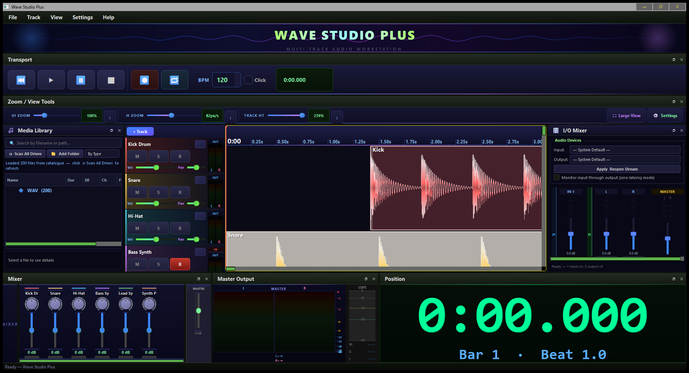
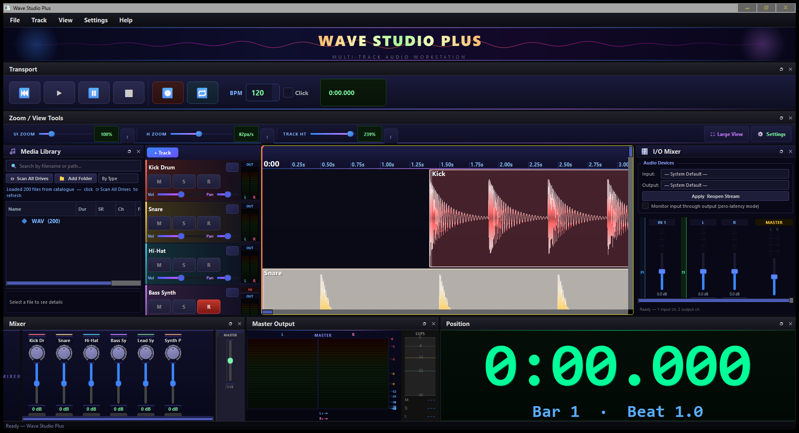
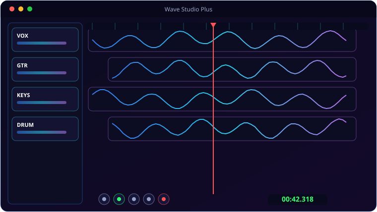

A look inside Wave Studio Plus.



Everything Wave Studio Plus brings to the table.
Unlimited Multi-Track Recording
A low-latency duplex engine with ASIO support lets you monitor live input while the rest of the mix plays back, with per-track I/O level meters.
Gradient Waveforms
Every clip renders with a rich seven-stop vertical gradient, glowing edges and bold labels — read your arrangement across the room.
Non-Destructive Editing
Trim from clip edges without touching the source. Ctrl-drag to time-stretch with librosa, plus pitch-shift, fades and zero-crossing snap.
Full Mixing Console
Vertical faders, pan dials, per-track FX, a master bus strip and an adaptive stereo master meter — all in sync with the track headers.
14-Mode 3D Visualiser
Press Ctrl+Alt+V for an OpenGL visualiser with fourteen hand-built 3D scenes, fed by a lock-free buffer so visuals never touch your latency.
Built-In Media Library
Catalogues the audio on every drive, hover any file for a 6-second preview, then drag it straight into your project.
System requirements.
Minimum
- OS: Windows 10 (64-bit) or Windows 11
- CPU: Quad-core, 2.5 GHz
- Memory: 8 GB RAM
- Graphics: OpenGL 3.3 / DirectX 11 GPU
- Storage: 500 MB + space for media
- Display: 1366×768 or higher
- Audio: any Windows-compatible input/output device
Recommended
- OS: Windows 11 (64-bit)
- CPU: 6-core, 3.5 GHz or better
- Memory: 16 GB RAM
- Graphics: Dedicated GPU for smooth real-time work
- Storage: NVMe SSD with several GB free
- Display: 1920×1080 or higher
- Audio: ASIO-compatible interface for low-latency recording
Requires FFmpeg on PATH for MP3 / FLAC / OGG / AAC export. The OpenGL 3.3 GPU requirement is for the 14-mode 3D visualiser.
The details.
| Audio engine | Low-latency duplex streaming with ASIO, real-time monitoring, lock-free visualisation buffer |
| Effects per track | Noise Gate → 3-Band EQ → Compressor → Reverb, plus per-clip noise reduction, filters and echo |
| Editing | Non-destructive trim, time-stretch, pitch-shift, zero-crossing snap, fades, copy/paste |
| Export | WAV 16/24/32-bit, MP3, FLAC, OGG, AAC/M4A — projects save as open .wspproj |
| Visualiser | OpenGL hardware-accelerated, 14 modes, fullscreen capable |
| Platform | Windows 10 / 11 · one-click installer · no account, no subscription |
Get Wave Studio Plus.
A full multi-track DAW that looks as alive as it sounds.
⬇ Download Wave Studio PlusWave_Studio_Plus_Setup.exe · £5 one-time · no subscription · Windows 10/11